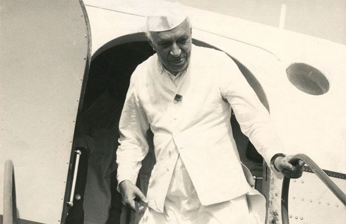
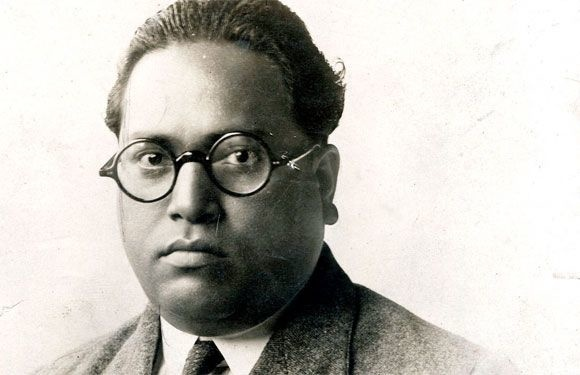
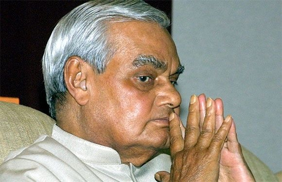
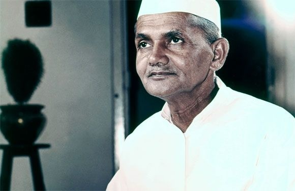
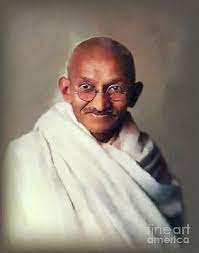
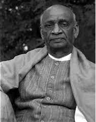
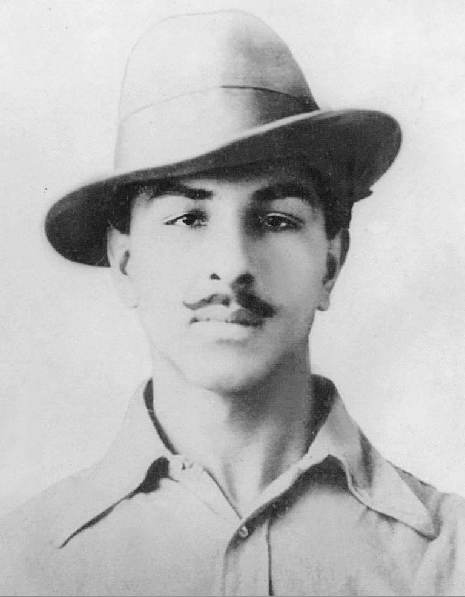
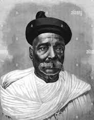

| Youtube| Nobel It| Google| Facebook | |||
|---|---|---|---|
The Grate Indian Political Leaders |
|||
Over the course of its magnificent history, India has been led by the most charismatic of leaders who have guided this country’s people and served as an inspiration for all of us. Let us pay tribute to 26 of them: |
|||
|  Pt. Jawaharlal Nehru |
 B. R. Ambedkar |
 Atal Behari Vajpayee |
 Lal Bahadur Shastri |
Indian Freedom Fighters |
|||
Around 75 years ago, on the historic date of 15th August 1947, India became free from British domination. It was the culmination of numerous movements and struggles that were rife throughout the time of British rule including the historic revolt of 1857. This independence was achieved through the efforts of many revolutionary freedom fighters, who took the lead in organizing the struggle which led to India’s independence. This blog brings you the Indian freedom fighters who sacrificed their lives to ensure India’s independence. |
|||
|  Mahatma-Gandhi |
 Sardar Vallabhbhai Patel |
 Bhagat Singh |
 Bal Gangadhar Tilak |
Copyrigt © 2022, The Great India |
|||
All Rigts Declared |
|||
Devloped & Maintained by Tushar Sinare |
|||
| Youtube| Nobel It| Google| Facebook | |||